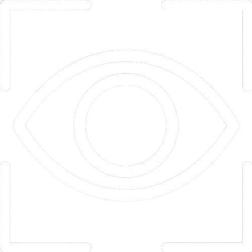
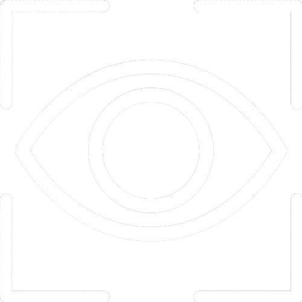

VISUODÉTEC
Dépister la fatigue oculaire grâce à quelques clics.
Une analyse scientiifique et plusieurs pages informatifs à propos de la fatigue oculaire sont réunis en un seul site. Un site éducatif de sensibilisation conçu pour vous aider à retrouver concrètement les signes primaux d'une fatigue oculaire éventuelle avant son aggravation.
© Tous droits réservés

DESCRIPTION
Essayer de gérer la santé des yeux efficacement.
Selon l’Organisation mondiale de la santé, en août 2023, au moins 2,2 milliards de personnes sont atteintes d'une déficience visuelle, dont au moins un milliard d'entre elles aurait pu être évité. Avec l'omniprésence des écrans dans notre vie quotidienne, les symptômes liés aux yeux, en particulier la fatigue oculaire, sont fréquemment négligés et se répandent de plus en plus. Alors, comment sensibiliser à cette problématique et prévenir la fatigue oculaire de manière accessible et précoce?
C'est dans ce contexe que Visuodétec, un appareil de dépistage automatisé, propose une solution novatrice sur l'analyse en temps réel de signes physiologiques associés à la fatigue oculaire. Basé sur plusieurs concepts scientifiques reconnus, ce prototype fournit un aperçu non diagnostique indiquant une fatigue oculaire potentielle. Ce site web lié à cet outil agit comme un centre de ressources recueilliant les résultats de l'analyse et aidant toutes personnes à s’informer sur la fatigue oculaire et ses signes éventuels. Dans le besoin, des recommendations et des moyens pertinents permettant à prévenir une fatigue oculaire sont aussi offerts.

PROCESSUS
Une solution démontrant une démarche de détection détaillée et logique.
ANALYSER
 

Après l'analyse avec le prototype VisuoDétec, rendez-vous sur la page «test». Les résultats noteront votre performance visuelle liée à la fatigue oculaire. Les données interprétées permettent d'estimer la sévérité et la présence de symptômes possiblement détectés.
S'INFORMER

Arrivez sur la page «infos» pour en apprendre plus sur la fatigue oculaire et les symptômes qu'elle peut entraîner. Le fonctionnement de l'analyse et des indicateurs de la fatigue oculaire vous sont vulgarisés.
PRÉVENIR

Afin de prévenir la fatigue oculaire, des moyens pertinents et reconnus par plusieurs études vous sont offerts. En prenant ces mesures nécessaires dans le besoin, cela permet de vous engagé à prendre soin de votre santé visuelle.
CONSULTER

Si vous cherchez une consultation chez un professionnel de la santé, allez sur la page «autres» puis dans la section «consultation» pour en trouvez une. Pour tous problèmes oculaires, contactez un médecin si vous avez des doutes sur votre santé.
CONTENU
Un contenu informatif basé sur des notions scientifiques et médicales.
L'objectif principal avec VisuoDétec est de sensibiliser ainsi que d'attirer l'attention du public sur l'importance de la prévention de la fatigue oculaire.
ANALYSE
VOIR PLUS

Une analyse complète sur les symptômes oculaires subjectifs et les principes objectifs liés au retraçage de la fatigue oculaire.
5+

Éléments évalués
INFORMATIONS
VOIR PLUS

Une liste composée d’une variété de contenu vulgarisé sur la fatigue oculaire. Retrouvez des vidéos explicatifs, des descriptions médicales et d’autres fonctions informatives.
10+

Aspects décrits
CONSEILS
VOIR PLUS

Une série de moyens et méthodes de prévention vous sont suggérés pour éviter ou prendre en charge la fatigue oculaire d'avance. Des répertoires de consultation sont également présents.
10+

Moyens proposés